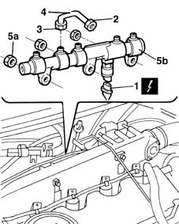

1060F30 fuel delivery manifold - r r
- Path
- Procedures > 10 ENGINE UNIT > 1060 DIESEL FUEL INJECTION > 1060F injectors and lines > 1060F30 fuel delivery manifold - r r
- Kind
- repair procedure (removal / refitting; the operation number is the code)
- Applies to
- engines: 1.9 JTD 8V; all production periods
- Interactive page
- https://sloeber94.github.io/elrnDB-fMltpl/en/#/2891404
Applies to: engines: 1.9 JTD 8V; all production periods
 Removing
Removing
 Refitting
RefittingOpen the bonnet lid.
1048A10 AIR CLEANER FILTERING ELEMENT - REPLACE
1016A10 sound-proofing cover - r + r
1080D34 engine oil vapour separator - r + r
1060F50 fuel return manifold - r r
1060F36 lines to injectors - r r
1. Disconnect the electrical connection from the fuel pressure sensor.
 | Name | Connector |
|---|---|---|
1 | Fuel pressure sensor |
2. Loosen the manifold side connector from the pipe leading from the pressure pump to the manifold.
3. Loosen the pressure pump side connector from the pipe leading from the pressure pump to the manifold.
4. Remove the pipe
5. Undo nuts (5a) and remove the single fuel manifold pipe (5b).

Applies to: engines: 1.9 JTD 8V; all production periods
Refitting
RemovingFit the single fuel manifold pipe and fix it using the nuts.
 | Fastening | Component | Ø | Value (daNm) |
|---|---|---|---|---|
- | Nut | INJECTOR FUEL MANIFOLD (DIESEL) | M8 | 2.5 |
Fit a new delivery pipe to the fittings.
Tighten the connector on the pipe carrying fuel to the manifold to torque and then tighten the connector on the pressure pump to torque.
| Fastening | Component | Ø | Value (daNm) |
|---|---|---|---|---|
- | Bolt | PRESSURE PUMP LINE TO FUEL MANIFOLD | M14 x 1.5 | 3 |
Connect the electrical connection to the fuel pressure senor.
| Name | Connector |
|---|---|---|
- | Fuel pressure sensor |
1060F36 lines to injectors - r r
1060F50 fuel return manifold - r r
1080D34 engine oil vapour separator - r + r
1016A10 sound-proofing cover - r + r
1048A10 AIR CLEANER FILTERING ELEMENT - REPLACE
Close the bonnet lid.
Topics linked from this page (7)
- 1016A10 sound-proofing cover - r + r
- 1048A10 AIR CLEANER FILTERING ELEMENT - REPLACE
- 1060F36 lines to injectors - r r
- 1060F50 fuel return manifold - r r
- 1080D34 engine oil vapour separator - r + r
- 5530B10 battery - r+r
- K83 Fuel pressure sensor